Projects
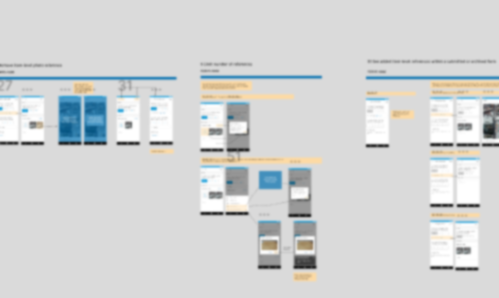
Data Collection Flows
Helming the design of several new features for Autodesk’s construction management app.
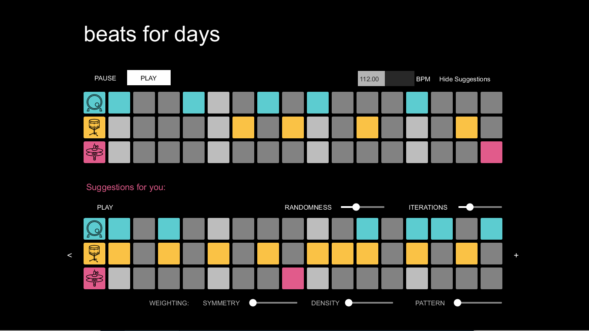
UCompose
Creating a drum machine that welcomes novice users and leverages the power of genetic algorithms.
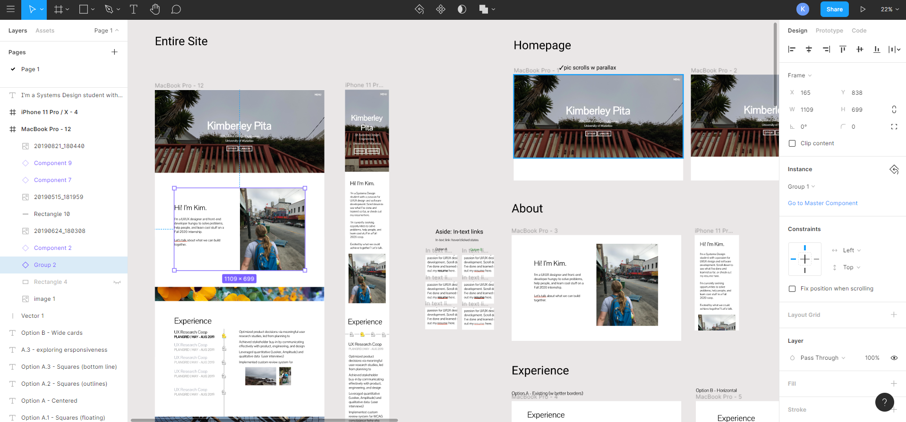
Personal Website
Designing and developing a fully responsive site to hone the skills I'm passionate about.
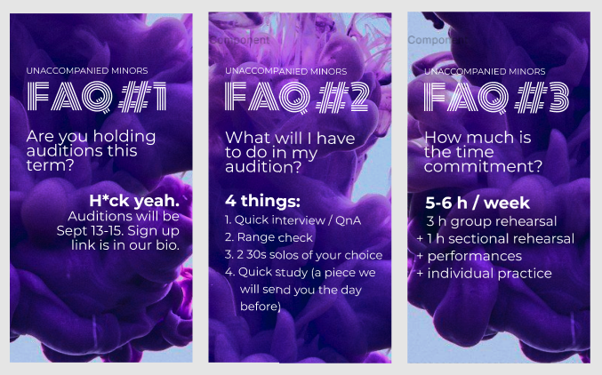
FAQ Graphics for Social Media
Answering common questions about auditioning for a cappella into beautiful, concise Instagram stories.
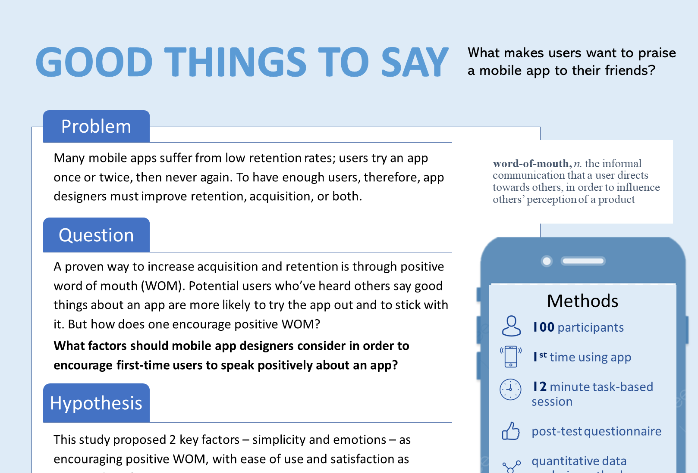
Design Article One-Pager
Condensing an interesting UX-related article into a clean, compelling one-page infographic.
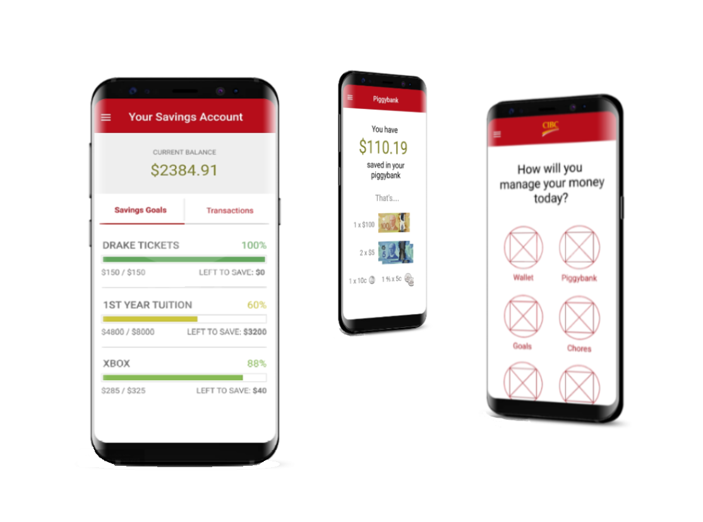
CIBC Flex
Ultimately selected for further development, this innovative solution was the result of thoughtful UX and product research.
Indigo, Misfit: Art Zine
Transforming one photograph into a series of artworks in different media and tying them together with minimalistic graphic design.
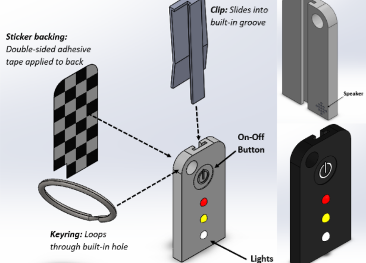
What-to-Plan
Leveraging iterative design, user research, and 3D product design to tackle pain points related to time management.
Data Collection Flows
Autodesk | Sept - Dec 2020
Helming the design of several new features for Autodesk’s construction management app, working with product and engineering from ideation to feature shipment.
Please note that feature details and imagery have been withheld as necessitated by product release cycles.
Skills: Complete iterative design process, cross-platform design, inter-team collaboration, developer handoff
Tools: Pen and paper, Balsamiq, Figma, UserTesting.com, ProdPad, Confluence, JIRA
- Began by gathering user and business requirements through interviews of customers and customer-facing roles, survey of feature requests using ProdPad, and competitive analysis
- Initiated discussions with PMs and engineers from 5 involved teams, including Design System, platform teams, and connected feature teams, in order to determine possibilities and constraints
- Mapped open questions and potential workflows, progressing into low-fidelity ideation involving team members, other designers
- As ideas converged into potential solutions, conducted concept tests with customers using wireframes built in Balsamiq
- Created hi-fidelity designs in Figma; refined these further through usability testing via UserTesting.com
- Worked closely with developers for web, iOS, Android, web to ensure smooth handoff and perform design QA for pixel-perfect delivery
UCompose
UW | May - Aug 2020
Creating a drum machine that welcomes novice users and leverages the power of genetic algorithms.
I collaboratively led the user research and design process and, in the implementation phase, was repsonsible for building the graphical interface in Java.
Skills: User interviews, concept testing, UI development, secondary research
Tools: Google Design Sprint, Figma, Java, Processing, rainbow spreadsheet
Collaborators: Vlad Hociota, Arushi Mathur, Ellen McGee, Shanthosh Pushparajah, Sienna Wishart
- Tools and processes for digital music creation are often complex and difficult to learn, as supported by secondary research in design and music journals
- Was tasked with designing experience to make digital music creation accessible for inexperienced users while leveraging music generation capabilities of genetic algorithms
- Kickstarted design process with Google Sprint: collected inspiration from diverse industries, ideated potential solutions, and got insights quickly through rapid prototyping and user testing
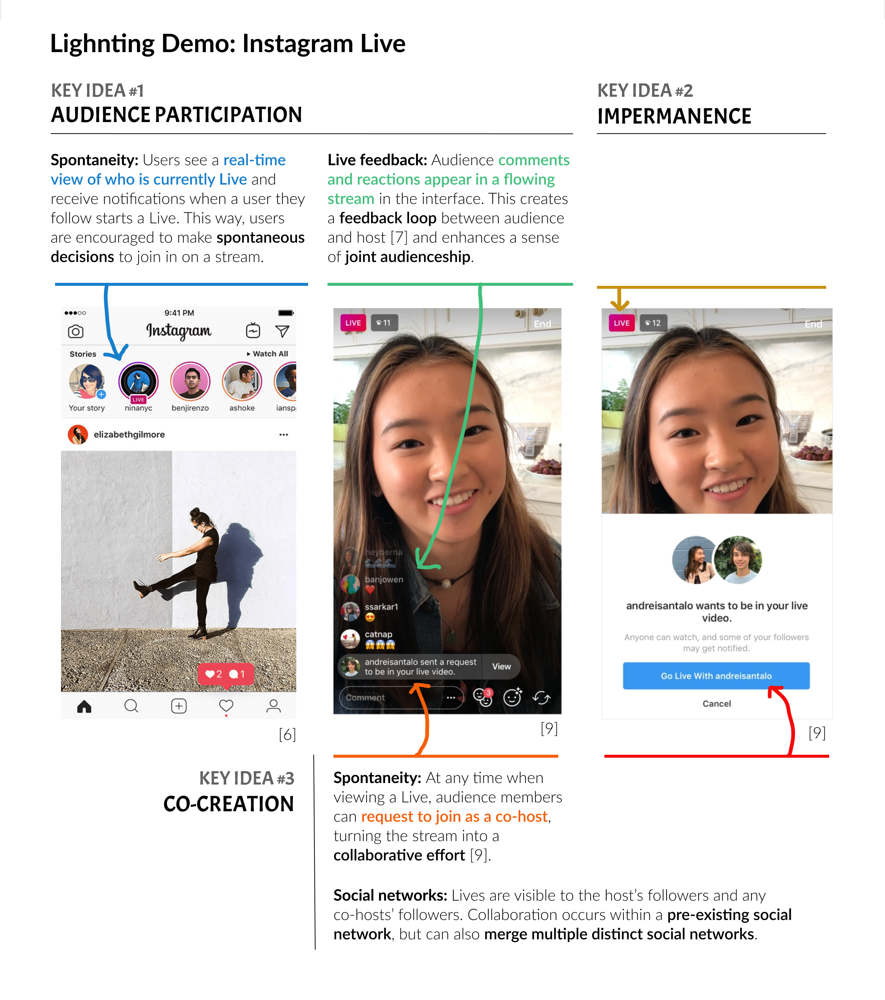
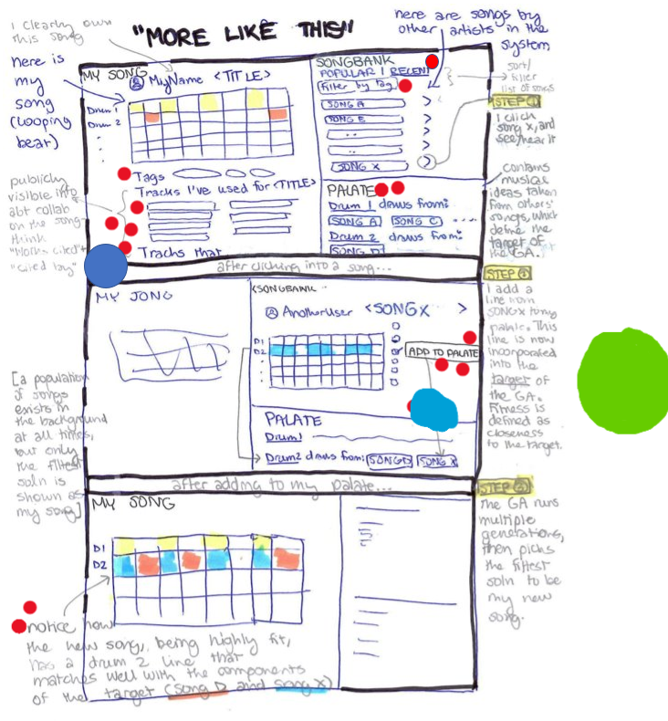
- Iterated based on findings, prototyping two new concepts aimed at investigating design hypotheses derived from Sprint
- Assessed concepts in one-hour interview + test sessions with range of users, leading to selection of Concept B with numerous UX improvements
- Implemented graphical UI of designed solution in Processing (Java-based IDE/language), modifying existing libraries to match mocks closely
Curious about what a genetic algorithm is or how it can make music? Well, you’re in luck. As part of this assignment, I also got to flex my graphical communication skills in creating this one-pager:
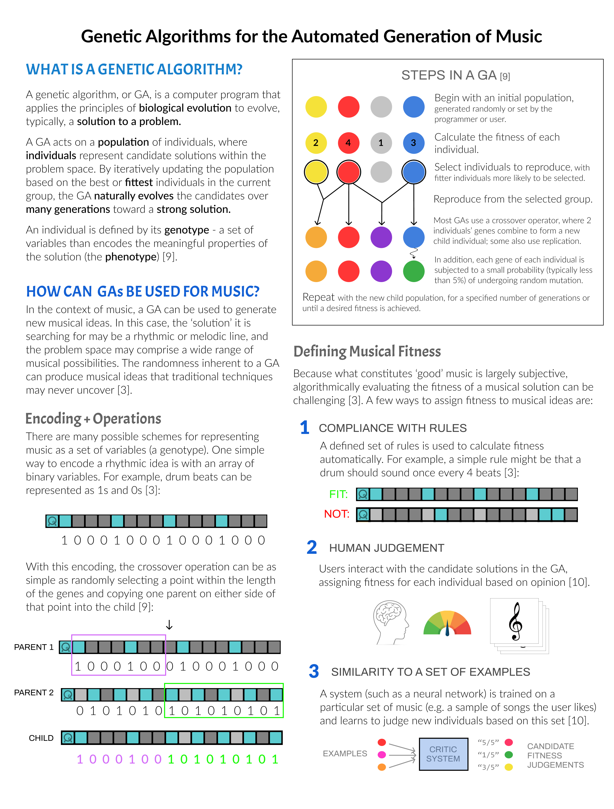
Personal Website
Personal Project | Apr - May 2020
Designing and developing a fully responsive site to hone the skills I'm passionate about.
Skills: Design for mobile & desktop, copywriting, responsive frontend web development
Tools: Dev: HTML, CSS, JS; Design: Pen and paper, Figma
In creating this site, I've leveled up my design and development skills in so many ways.
Here's a bit of my process:
- Started with a desire to completely redesign my personal website and a bunch of ideas of what I wanted:
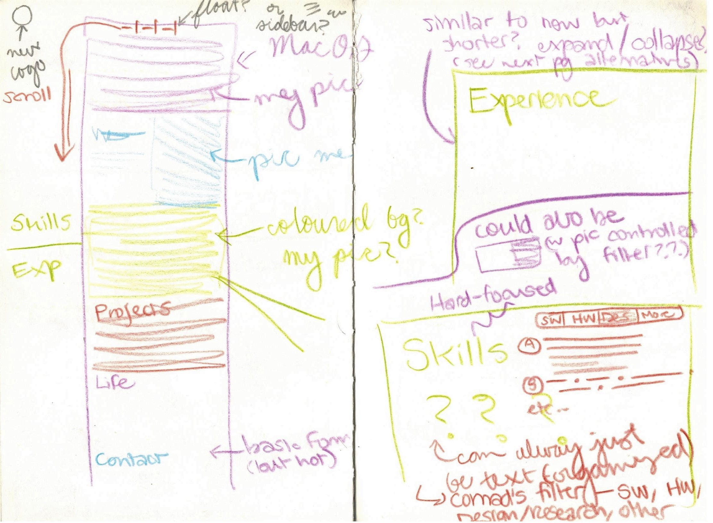
- Stepped back to research priorities of users (employers and peers)
via career development resources and a survey of best-in-class personal websites;
this research defined key elements such as the order of contents
- Sketched numerous design alternatives for each section, leveraging techniques such as Crazy 8s to spark creativity
A few examples of early sketches for the Projects section are below (though there are more where these came from!)
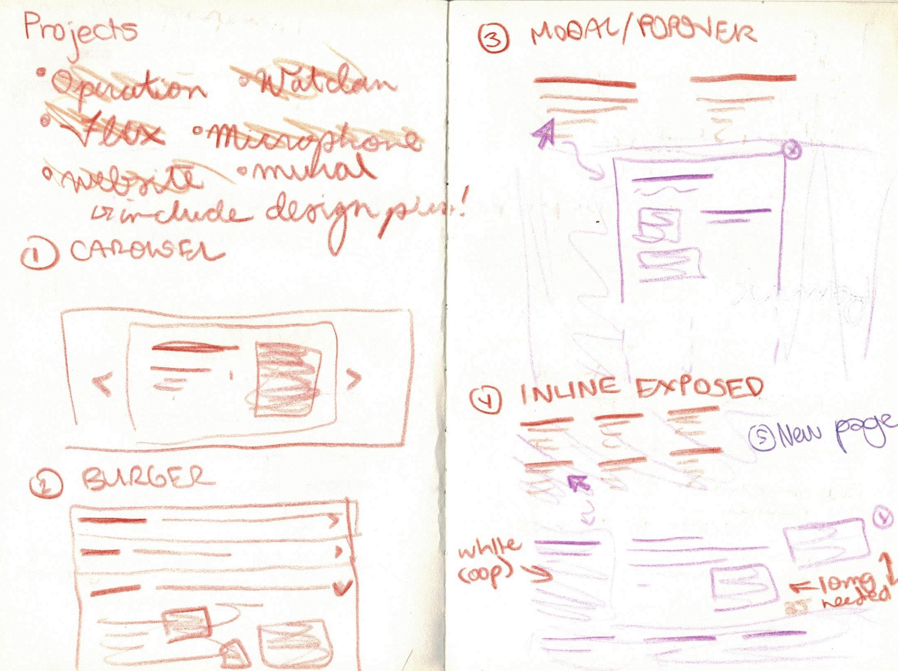
- Selected best aspects of various design alternatives and used Figma to flesh out realistic options for selection
For the Experience section, I prototyped three key design options.
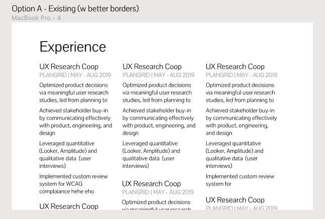
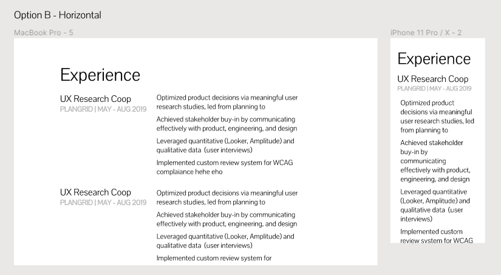
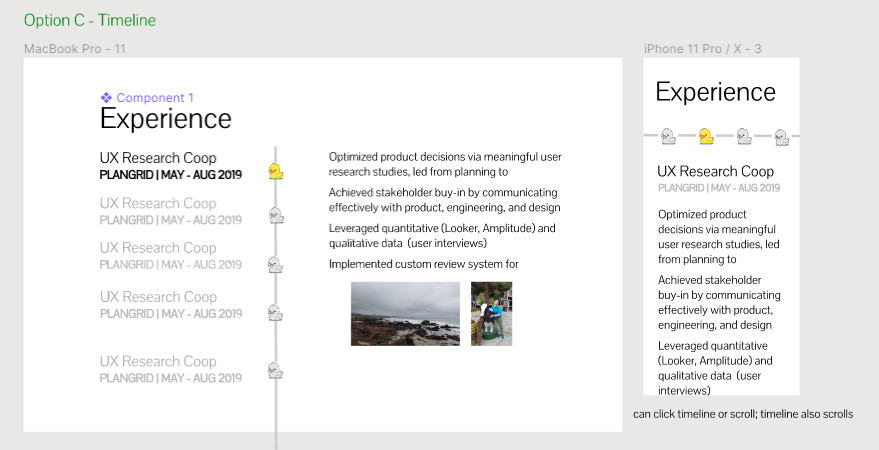
I selected Option C because it best allows for both a
high-level overview and detailed job descriptions, both of which research showed to be important.
Peers also responded positively to the time-based structure and interactivity.
- Coded site in HTML, CSS, and JS, problem-solving to implement features such as snap-scrolling mobile carousel (Experience), responsive cards (Project)
- Iterated on designs to improve appearance and usability based on continuously sourced feedback
- Tested thoroughly to ensure strong functionality and appearance in all device sizes, browsers
- Assessed usability of final site with user tests and iterated based on results; for example, mitigated user confusion
by adding scrollbar to modal
I learned a ton about design and development from this project. For example:
- When designing for an informational site, it's important to fully account for the content to be delivered;
unlike web apps, where content appears in consistent formats, informational content may be any length,
and the design must properly frame and support content of all lengths
- The size of content relative to the screen is another hugely important parameter to consider early in design
- An organized approach to styling and repsonsive breakpoints saves you time down the road
- 'Cool' things, like buttons that jump up on hover, are easy to code;
the more difficult, but more important, aspects of a site are the ones you don't notice,
like proper margins and spacing across all browser sizes
I can't wait to keep improving on this site and to continue building my skills so that I can build
even more functional and beautiful sites in the future.
FAQ Graphics for Social Media
Unaccompanied Minors A Cappella | SEP 2019
Answering common questions about auditioning for a cappella into beautiful, concise Instagram stories.
Skills: Copywriting, mobile design, social media
Tools: Figma
- Created series of FAQs to address 6 most common concerns about auditions, as President of a cappella group
- Shared via Instagram stories, sparking high viewer engagement and starting conversations with prospective members
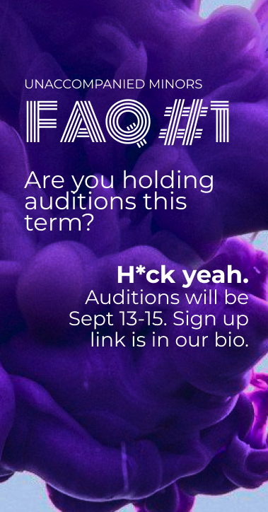
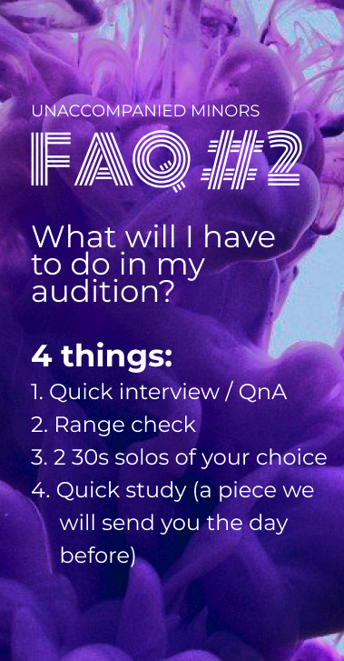
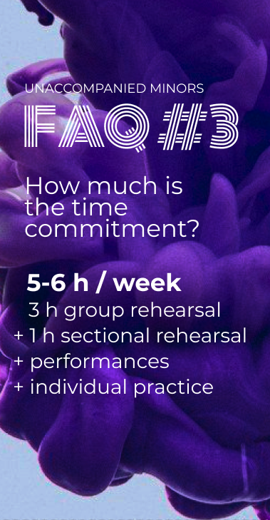
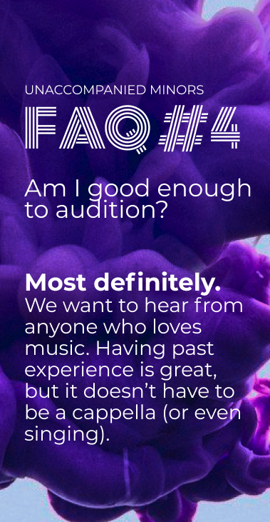
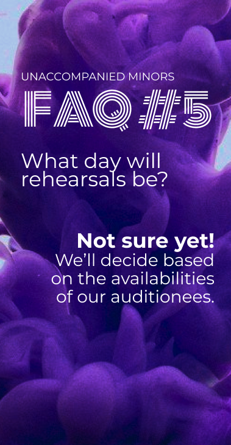
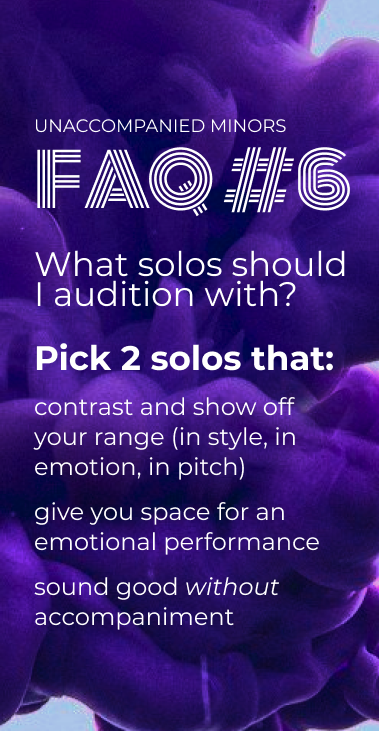
Design Article One-Pager
UW | JUL 2019
Condensing an interesting UX-related article into a clean, compelling one-page infographic.
Skills: Synthesis, information design
Tools: Powerpoint
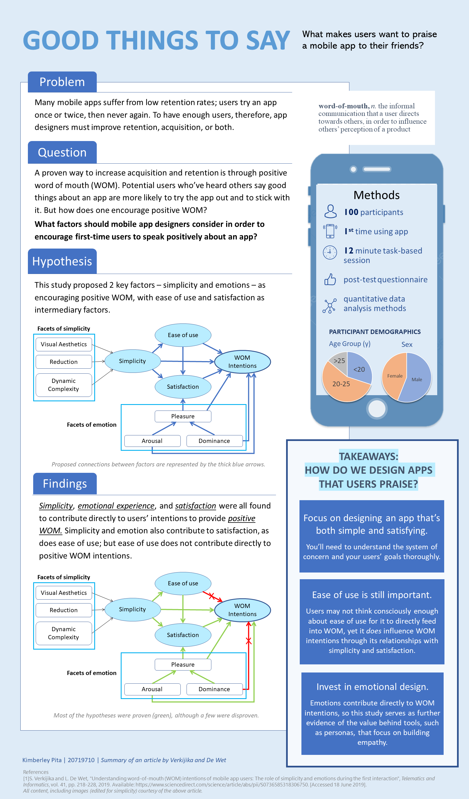
Indigo, Misfit: Art Zine
Personal Project | NOV 2018
Transforming one photograph into a series of artworks in different media and tying them together with minimalistic graphic design.
Skills: Visual art, graphic design
Tools: Publisher, pen & ink, watercolour, marker
I love visual art - you can see plenty of examples over on my
art Instagram.
I created this zine to stretch my creativity, to celebrate two subjects I admire,
and to try out a minimalistic approach to information design.
View the complete PDF
here.
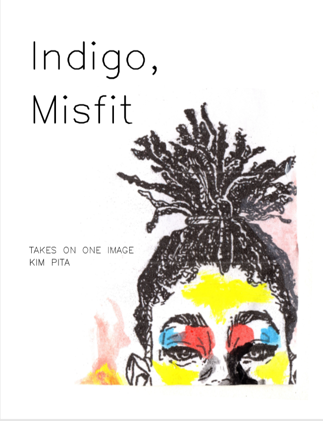
CIBC Flex Project
CIBC Digital | Dec 2018
Ultimately selected for further development, this innovative solution was the result of thoughtful UX and product research.
Skills: User research, product management, market / competitive research, report writing, presentation
Tools: Alpha, Forrester, Confluence, PowerPoint
Collaborators: Saatvik Walia, Katerina Salonikidou, Jon Dawson, Mavis Xiao
- Led cross-functional coop group in designing innovative solution with strong case for business and users
- Headed full-scale user research initiative, involving 3 surveys and 650+ participants, to understand problem space, gather concept feedback, and inform iteration and next steps
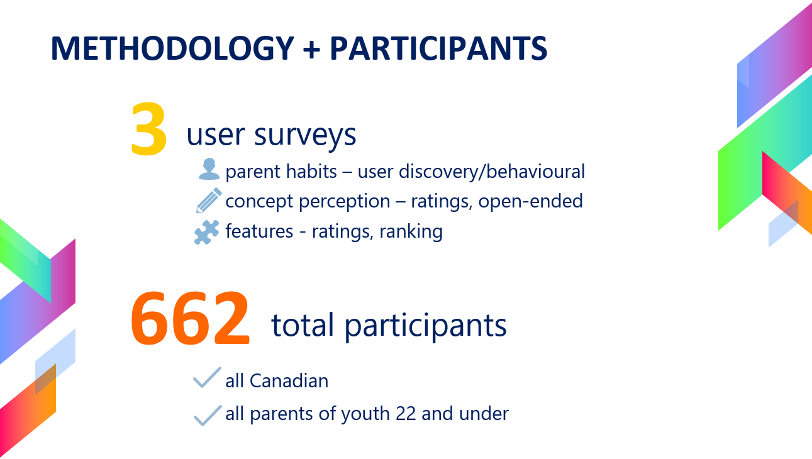
- Further directed concept development via market and competitive research
- Took on product management role, guiding establishment of decision criteria and expected results and networking across business units to determine feasibility and business benefits
- Composed and delivered highly praised pitch presentation, plus in-depth research report, to company executives
As an exercise in mobile UI, I recently re-designed the wireframes we delivered for this project! The new designs are not only more attractive and
more in line with brand standards, but they better serve their purpose of communicating the ideas behind the initiative.
What-to-Plan
UW | Fall 2017
Leveraging iterative design, user research, and 3D product design to tackle pain points related to time management.
Skills: Problem definition, user research (surveys), physical product design, usability testing
Tools: Iterative design process, QFD, persona, Solidworks, 3D printing
Collaborators: Conrad Heidebrecht, Katrina Hermanns, Sylvia George, Jack Yu, Vlad Hociota
- Created time management system in which users track to-dos using a mobile app and receive reminders in the form of light/audio notifications from portable, attachable notification beacons
- Headed physical product design, including creation of MFP through modeling in Solidworks and 3D printing
Our thorough design process led to a well-researched final product, from user research to concept development to iterating on the final prototype.
- Started by exploring current solutions and frustrations via user surveys; results informed us that both digital and physical systems served certain needs, but users felt current solutions were easy to forget, difficult to use
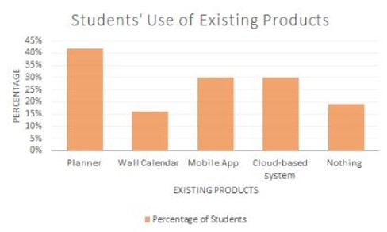
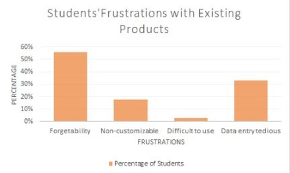
- Further understood users by conducting interviews and creating personas, which revealed key needs: easy to use, effortless to remember, smooth to incorporate into existing habits
- Also assessed competitors and established benchmarks using QFD
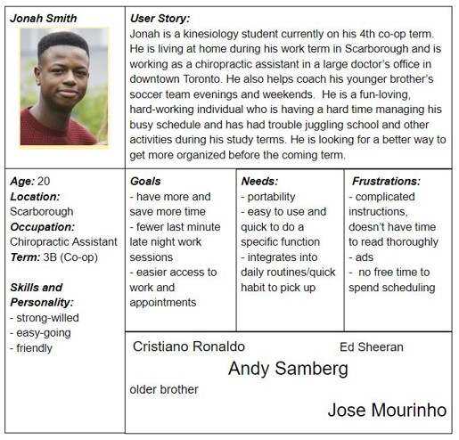
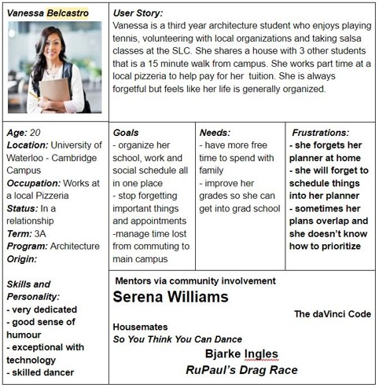
- Based on problem definition work, collaboratively brainstormed solutions, using morphological chart to generate three distinct concepts
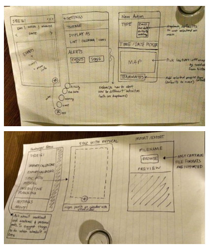
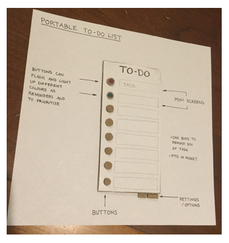
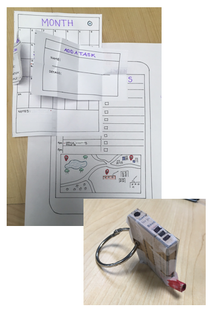
- Using best of class chart and synthesizing two of initial concepts, developed concept of planing app combined with physical notification devices
- This idea also addressed areas of need as identified by competitive analysis and user research
- Developed three distinct prototypes for physical beacon
- Conducted usability testing to uncover issues with ergonomics, affordances; also conducted testing to determine most understandable color coding for beacon's lights
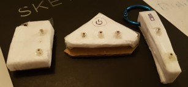
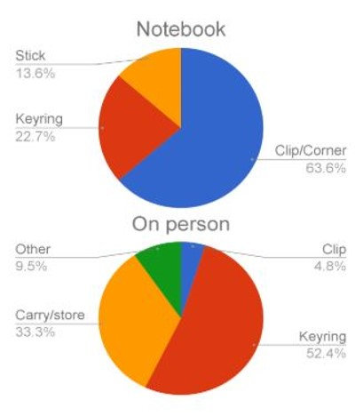
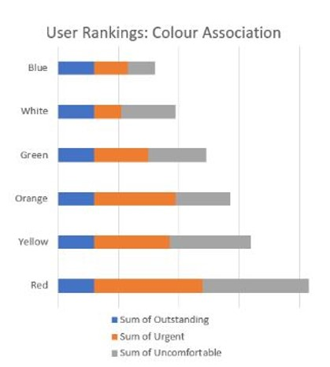
- Iterated based on feedback and communicated final design clearly through 3D-printed prototype and design drawings
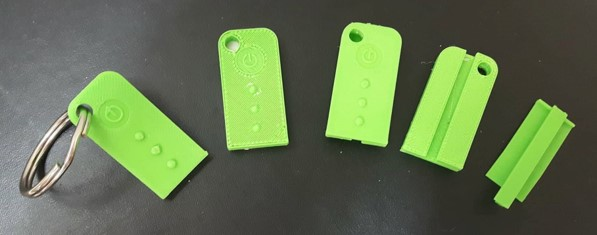
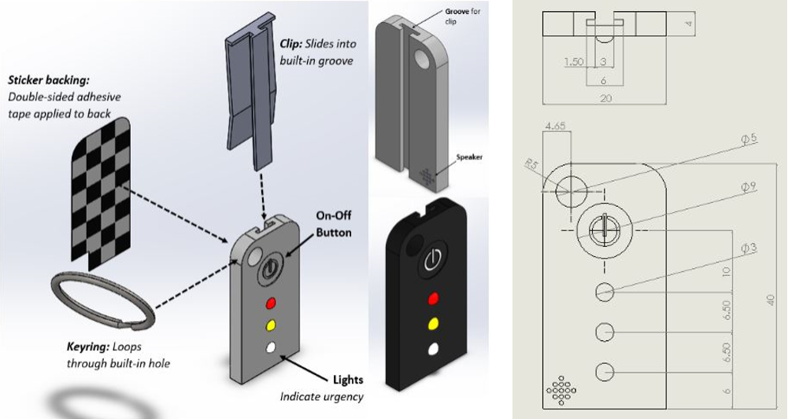
Given the opportunity to continue this project, the next step would be further testing, ideally through a long-term study with field observation and periodic interviews.